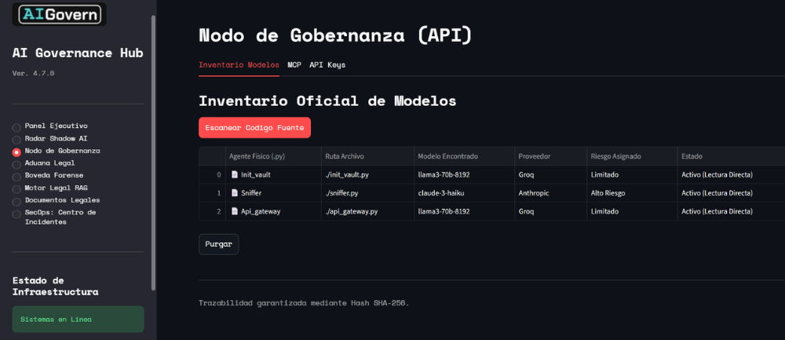

La forma más segura de implementar IA en tu empresa
No implementamos su IA, la gobernamos. Proporcionamos la infraestructura de control, cumplimiento y seguridad necesaria para que sus agentes operen bajo los estándares de la Ley de IA de la UE y el RGPD, transformando la opacidad tecnológica en activos auditables.

La Torre de Control para su Inteligencia Artificial
8 módulos especializados que transforman la opacidad tecnológica en un entorno auditable, seguro y alineado con la normativa europea.
Panel Ejecutivo (C-Level)
Vista de mando con KPIs críticos, Heatmap de riesgo y generación de Trust Reports en un clic.
Radar Shadow AI
Detecta el uso de IAs no autorizadas, mitigando fugas de datos antes de que ocurran.
Nodo de Gobernanza
Gestión del combustible de los agentes y control de conexiones a bases de datos internas.
Aduana Legal (HITL)
Filtro humano (Human-in-the-Loop) con envío de peticiones retenidas por Slack para aprobación.
Seguridad Blindada On-Premise
Nuestra infraestructura se integra directamente en su red local corporativa. La información sensible nunca abandona su perímetro de seguridad físico.
- El Túnel: Los agentes envían peticiones a nuestro Gateway vía API Rest segura.
- El Proceso: El Gateway audita y anonimiza PII antes de permitir que la petición salga a internet.
¿Listo para proteger tu infraestructura de IA?
Selecciona un horario en nuestro calendario para una demostración personalizada.